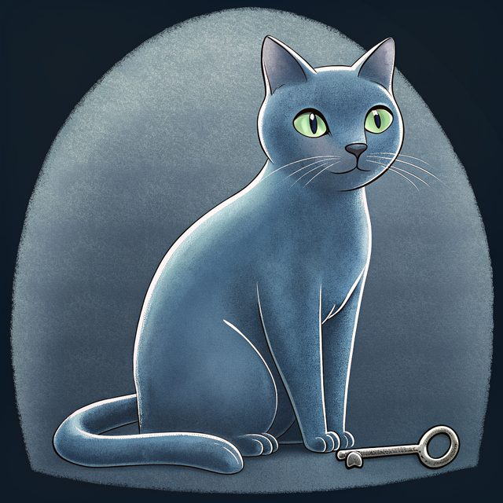

Account
Register a name. Hand over the URL.
An account signs in with an issuer, registers a label, and publishes an encrypted build document. The installer fetches that URL. This page describes the portal, which is where you will do it.
The portal and the API are live.
The portal is not open yet. Its address is build.blunix.io.

Sign in
People use an issuer. The platform is a relying party. It does not run an OAuth server, and it does not keep a password.
-
After Dark Systems SSO
Our issuer, at adsas.id, and the only one today. The portal button says "Sign in with After Dark Systems SSO". It is OpenID Connect: authorization code with PKCE (S256), plus state and nonce. The scopes are
openid email profile. The API checks the signed ID token against the issuer's keys, then sets a session cookie. The cookie is HttpOnly, Secure, and SameSite=Lax, and it lasts 12 hours. Signing out deletes the session. The client id, the secret, and the issuer URL are Worker secrets. None of them are in this site. -
Google, designed for later
OpenID Connect at https://accounts.google.com. Authorization code with PKCE. The audience has to be our client id, once that client exists.
-
GitHub, designed for later
GitHub user sign-in uses GitHub's OAuth 2.0 authorization-code endpoints. The same rules: allowlisted issuer, live expiry, matching audience, algorithm allowlist.
noneis rejected.
A token from any other issuer fails closed. Google and GitHub are not built. Only the portal's sign-in link starts a login.
The label
One account can hold many labels. Each label is one installer URL and one current ciphertext.
- Shape. One ASCII DNS label. A letter, then lowercase letters, digits, or single hyphens, 2 to 32 characters, ending in a letter or digit. No punycode. Reserved: www, api, updates, log, mail, build, portal, admin, root, blunix, proxy, status, and any v followed by digits. Twenty labels per account.
- Empty until you publish. GET / is a 404 until ciphertext exists. The installer applies nothing.
- A separate domain. Build hosts live on blnx.io, not under blunix.io, so a build file never shares cookies or an origin with this site, the portal at build.blunix.io, or the API.
- Versions. Each upload is a new version. ada.blnx.io serves the latest. Deleting the latest moves the name back to the highest remaining version. A version number is never used twice. Releasing a label holds the name for 30 days.
- Pinned names, not on yet. v3.ada.blnx.io is meant to serve version 3 until you delete it. Those names have no certificates yet, so the portal and the API do not hand them out. Use the latest name for now.
- Guessable on purpose, when the label is public. You chose a name you can hand to someone. Anyone who can guess a public label can download the ciphertext. They still need the key. A bearer on that anonymous fetch would be a second secret. The build host does not ask for one.
- Visibility. A public label serves the ciphertext to anyone who can say the name. That is the spoken install. An enrolled label serves it only to a machine key bound to that profile. Enrolled labels are designed, not built. The service design defaults new profiles to enrolled.
- Lookalikes. Labels that mimic another label are not rejected yet. That check is not built.
Publish
The browser composes the node document, generates the key, encrypts, and uploads ciphertext. The key stays in the browser and on the install card you save.
-
The document is the build
The machine hostname, the disk layout, the network (DHCP, or a static address, gateway, and DNS), the access profile, and the update channel, which is stable. The same schema the image accepts. Unknown fields are refused. A field named like key material is refused. A shell script is refused. The check happens before encrypt.
-
A generated key, age passphrase mode
You do not choose the key. The browser draws 100 bits from its CSPRNG and writes them as 20 characters in four groups of five. It encrypts with the age specification, stretched with scrypt, the way age defines it. There is no second cipher. The browser uses typage, served from the portal itself. Debian
agedecrypts on the machine. -
The server stores ciphertext
The key is not uploaded, not hashed, not stored, and not logged. The install card is shown once, with a text file and an offline bundle to download. A lost key means that version is gone. Publish again for a new one. The account can see the size, the time, and the sha256 of the ciphertext. It cannot read the document back.
-
Hand the URL to the installer
The machine fetches https://ada.blnx.io/ over TLS, asks for the key with echo off, and decrypts locally. The sequence on the box is the install page.
Publishing again changes the file the next install fetches from the latest name. Taking a later document on a machine that is already installed is the service, which is designed, not built. A new image is a new release on the log.
What we keep
Only what the portal needs to work. Never your build key, your document in the clear, or a password.
- The account. The issuer and the subject from your ID token, which is who you are to us. A display name for "Signed in as": the token's name, else its username, else its email. It is refreshed each time you sign in, and nothing grants access by it. The time the account was made.
- Sessions. A SHA-256 of the session cookie, with its start and end time. Expired sessions are deleted. During a sign-in, the state, nonce, and PKCE verifier are kept for up to 10 minutes, then deleted.
- Labels and builds. Each label and when you reserved it. For each version: the number, sha256, size, and time, and the ciphertext itself. Deleting a version or a label deletes its ciphertext. The label and version rows stay, marked deleted, so the 30-day hold and the numbering hold.
- API keys. The SHA-256 of each key, its name, its scopes, and when it was made or revoked. Never the key.
- Audit. One row per reserve, upload, delete, and key event: time, account, event, label, version, sha256, key fingerprint. Never a body, a key, or a token.
- Rate limits. Hourly counters. A login counter is keyed by a SHA-256 of the address, not the address. Old counters are deleted.